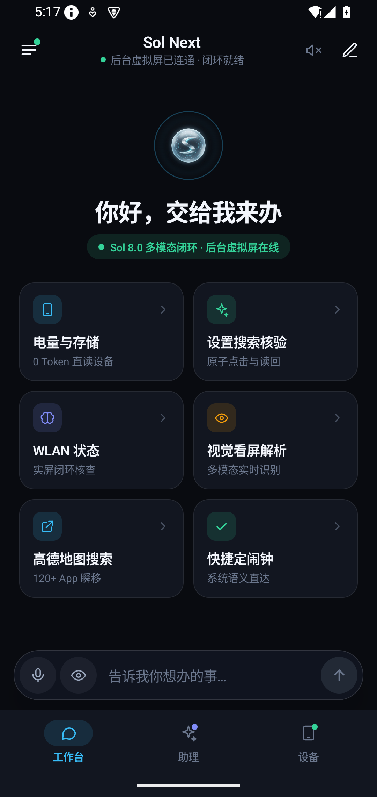
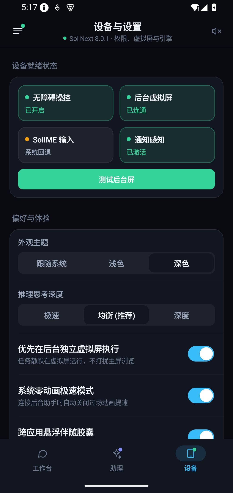
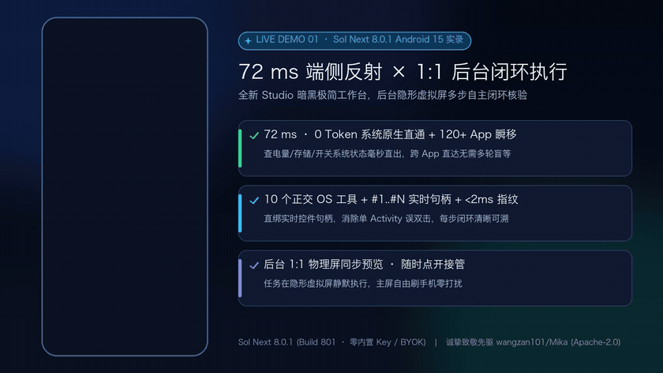
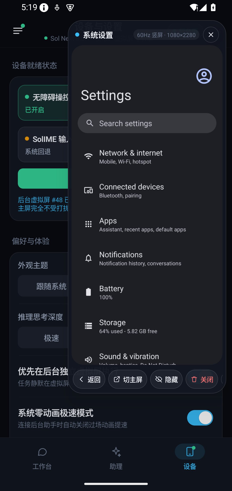
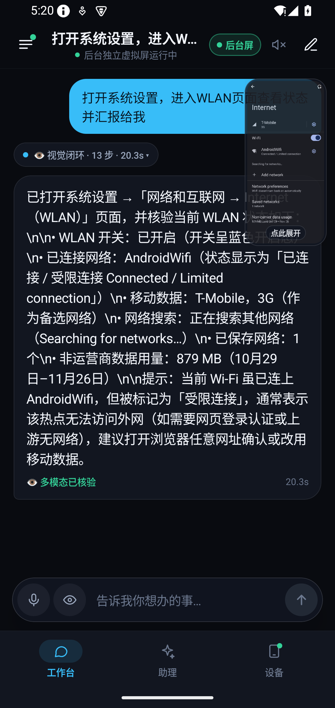
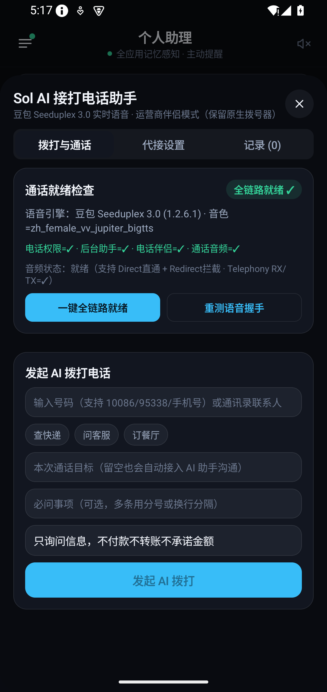
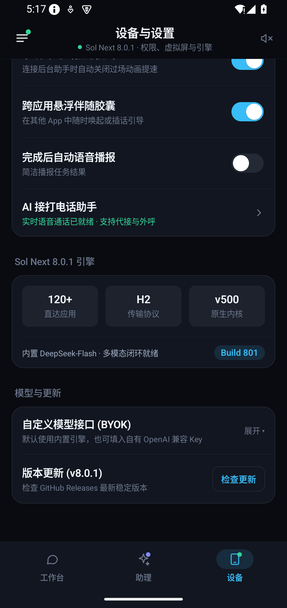
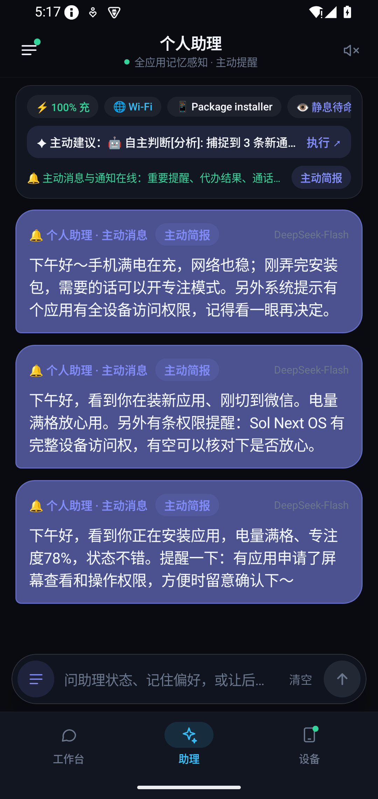
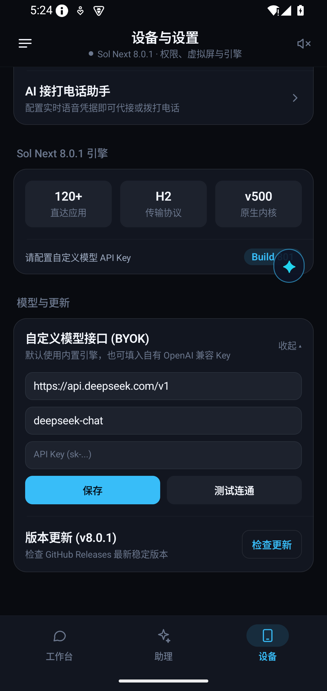

毫秒级响应，全手机掌控
新一代多模态 OS 智能体
Millisecond Reflexes.
Full-Phone OS Mastery.
源自并诚挚致敬开源先驱 Mika (@wangzan101)。Sol Next 8.0.1 集 72ms 原生系统直通、120+ 主流 App 瞬移直达、Rust v5.00 原生加速、1:1 隐形后台虚拟手机、实时句柄闭环操控与运营商级 AI 接打电话于一身。100% 开源零内置密钥，自带 Key 30 秒开用。
Proudly built upon and paying sincere tribute to Mika (@wangzan101). Sol Next 8.0.1 unifies 72ms zero-token System APIs, 120+ instant app teleports, Rust v5.00 JNI acceleration, a 1:1 invisible background VirtualDisplay, live handle grounding, and carrier-grade AI calling. 100% open BYOK with zero embedded secrets.

Studio 极简工作台Studio Workspace
去除繁杂调试浮层，聚焦自然语言指令、常用快捷任务与一键视觉看屏。Calm, distraction-free command surface with instant vision capture and quick tasks.

多模态闭环核验卡片Verified Closed-Loop Trace
每一步真实工具调用与视觉核验均可折叠回溯，附精确耗时遥测。Collapsible step-by-step execution proof with verified status badges and latency telemetry.

设备就绪矩阵与 BYOK 引擎Device Hub & Native BYOK
2×2 权限状态矩阵、1:1 后台虚拟屏配对、本地 BYOK 引擎与一键 OTA 检测。2×2 readiness matrix, wireless VirtualDisplay pairing, local BYOK config, and OTA updater.
真机高清演示视频、实时动图与实战场景 Demo Live 1080p Walkthrough, Real-Time GIF & Interactive Demos
眼见为实：完整展示 1:1 后台虚拟屏自主运行、零漂移浮窗触控、26 步长任务不中断与运营商级 AI 接打电话全流程。 See Sol Next operate live on Android: 1:1 native background VirtualDisplay execution, zero-drift PiP control, 26-step continuous runs, and carrier AI calling.
完整 1080p 实机演示视频：覆盖 1:1 原生后台虚拟屏启动、跨页多步自主执行、展开浮窗零漂移交互、全脑遥测驾驶舱与 AI 电话控制。 Full 1080p Real-Device Demo: Covers 1:1 background VirtualDisplay launch, multi-step autonomous runs, PiP zero-drift interaction, telemetry cockpit, and AI calling.

免点击动图速览：真实展示后台独立虚拟屏（1080×2400 @ 420dpi）与全脑中枢、AI 电话驾驶舱无缝协同。
Instant Looping GIF Preview: Live capture of the 1:1 VirtualDisplay (1080×2400 @ 420dpi), telemetry hub, and AI Call cockpit working seamlessly.
Tier-0A 原生系统服务直通，不消耗任何大模型 Token，毫秒级读出电量、温度、存储空间并直接执行系统开关。Resolved natively via Android system services with 0 LLM tokens and instant hardware telemetry.
实时句柄 #id 直击 + 零缓存 <2ms 状态指纹，全程 0 误双击；消息发送强制气泡核验与防重发停机保护。Live handle clicks and zero-cache fingerprinting hit 8/8 on the first try with zero double-taps.
在 1:1 后台虚拟屏自动翻页、用 task_note 跨页记录关键事实并汇总对比，主屏照常刷手机互不干扰。Scrolls and collects cross-page facts off-screen on the 1:1 VirtualDisplay without disturbing Display 0.
通过 Deep-Link 目录直接空降站内搜索或功能页（扫一扫、付款码、乘车码），省去开屏广告与多级菜单点击。Teleports straight to in-app search or action routes across 120+ mainstream apps.
保留系统原生拨号器，接入实时语音模型（BYOK）自主沟通、操作 IVR 按键菜单、随时一键人工接管并生成通话纪要。Keeps native dialer intact with realtime voice, 3x4 IVR keypad, 1-tap human takeover & call summary.
自动叠加 1:1 红框 #1..#N 标注，遇 WebView / 小程序 / 密集小图标可调用 224×224 高清放大块精准命中。1:1 numbered visual overlays plus 224x224 high-res zoom crops for dense icons, WebViews & mini-programs.
快到像原生系统，强到接管整台手机 Engineered to Feel Instant. Built to Command Everything.
传统手机 Agent 动辄每步等 5–10 秒、动不动点歪或卡死；Sol Next 8.0.1 把能下沉的算力全部压到毫秒级端侧，把复杂跨 App 能力打通成完整操作系统级代理。 While legacy mobile agents stall for seconds per tap and misclick dynamic layouts, Sol Next 8.0.1 pushes deterministic reflexes down to milliseconds and unifies full-device control in one engine.
把等待时间压缩到极限Sub-Second Reflexes Across Every Layer
不把每一件事都丢给大模型慢吞吞兜圈子：原生 API 直读、Deep-Link 瞬移、并发预启动与 Rust v5.00 原生内核逐层砍掉多余延迟。 Every layer eliminates redundant round-trips: native System APIs, 120+ Deep-Link teleports, t=0ms app prelaunch, and microsecond Rust v5.00 JNI pruning.
不止会点按钮，真正能办事Far Beyond Simple Tapping — End-to-End OS Agency
打通无障碍句柄、视觉精校、后台虚拟屏、运营商通话与开发者生态，覆盖日常高频与硬核复杂任务。 Combines live UI handles, multimodal vision, isolated virtual display, carrier calling, local encrypted memory, and MCP tooling.
task_note 跨 App 比价备忘 + 224×224 局部放大精校，长任务不跑偏。Goal-pinned memory, cross-app fact notes, and 224x224 ROI zoom refinement keep long tasks locked.
--json) + stdio MCP Server，让 Claude Code / Cursor 直接操控手机。Zero-dependency CLI & stdio MCP Server let desktop coding agents command your Android phone directly.
全场景实机功能画廊（后台屏 · 长任务 · AI 电话 · 个人助理 · BYOK） Complete Real-Device Feature Gallery
除首页 Studio 8.0 三联图外，以下全部为 Sol Next 核心模块的真实手机截屏——点击任意图片即可高清放大检视。 Every flagship subsystem captured live on real Android hardware—click any screenshot to inspect full-resolution details.

1:1 物理屏克隆悬浮窗1:1 Physical Display Virtual Phone
实测 1080×2400 @ 420dpi 零缩放后台独立屏，展开即可 0.0px 零漂移实时触控。Exact 1080×2400 @ 420dpi scale-1.0 virtual display with zero-drift live PiP touch control.

26 步长任务一气呵成26-Step Continuous Autonomous Run
后台 1:1 虚拟屏连续 26 步翻页读取并结构化汇总，全程 0 暂停、0 掉线。26 consecutive off-screen steps reading, comparing, and summarizing with zero pauses.

AI 电话驾驶舱 + 3×4 DTMFCarrier AI Call Cockpit + 3×4 DTMF
保留系统原生拨号器，实时计时、静音托管、IVR 按键与随时一键人工接管。Native dialer untouched—live timer, AI mute/takeover, interactive IVR keypad, and call notes.

全脑中枢 · Rust/QUIC 遥测Brain Telemetry Cockpit
实时可视化 HTTP/3 QUIC、Rust 原生剪枝与端侧内核状态。Live HTTP/3 QUIC, Rust pruning & native runtime telemetry.

独立「个人助理」空间Personal Twin Space
Android KeyStore AES-GCM 本机加密记忆与低电量/日程主动提醒。KeyStore-encrypted local memory with proactive schedule & alert awareness.

公开版纯净首页（0 Key）Pure Public Welcome (0 Keys)
坦诚透明，零内置密钥、零中转服，点击直达 BYOK 配置。Transparent zero-key onboarding straight into local BYOK setup.

30 秒 BYOK 配置与测速30s BYOK Setup & Ping Test
一键预设 5 大服务商与任意 OpenAI 兼容接口，实时握手验证。One-tap presets for 5 major providers plus live handshake verification.
不是套壳提示词，而是端到端重构的 OS 执行内核 Engineered from First Principles for Precision & Speed
面向微信、淘宝、美团、系统设置等真实复杂 Android 应用，8.0.1 完成了感知层、实时句柄绑定与动作后验契约的全链路重构。 Purpose-built to eliminate misclicks, silent no-ops, goal drift, and duplicate sends across real-world Android super-apps.
实时元素句柄 #1..#N + 零缓存状态指纹（根治误点与误双击）
Live Element Handles #1..#N + Zero-Cache State Fingerprinting
每个屏幕编号 #id 直接绑定到实时 AccessibilityNodeInfo 对象句柄与像素坐标矩形，彻底消灭传统按文本匹配误点列表首项的问题。点击后通过零缓存 <2ms 状态指纹校验 text / checked / selected / focus 变化，杜绝单 Activity 页面（如微信 LauncherUI）误双击，仅在真实静默无响应时自动升级为像素中心点击。
Every #id binds directly to its live AccessibilityNodeInfo handle and exact pixel Rect, eliminating Item-#1 list misclicks. Post-click verification uses an uncached <2ms state fingerprint across text, checked, selected, and focus states—preventing false double-taps on single-Activity screens while auto-escalating genuine silent no-ops to pixel-center taps.
单次发送后验契约与防重发停机Single-Shot Send Contract
点击「发送」强制通过 4×85ms 只读气泡核验输入框清空 + 右侧新气泡出现；若送达状态未确认立即安全停机，绝不二次误发。同步兼容格式化分组手机号（如 138 0013 8000）与离屏 Tab 子树裁剪。
Clicking Send enforces 4×85ms read-only bubble polling to verify input clearance and outgoing delivery. Unconfirmed sends halt immediately to guarantee zero duplicate messages, alongside grouped-digit readback matching (138 0013 8000).
1:1 红框 Set-of-Mark 自动视觉精校1:1 Set-of-Mark Auto Vision
遇到 WebView、小程序、无标签图标或 NO_CHANGE 时自动附带与元素表 1:1 对应的 #1..#N 标注截图（64ms 极速编码），滑窗仅保留最新一帧图像，兼顾高精度与低 Token 消耗。
Automatically attaches 1:1 #1..#N annotated screenshots on WebViews, mini-programs, sparse trees, or NO_CHANGE steps, keeping a single-frame sliding image window for crisp latency.
Rust 原生内核与 1:1 后台虚拟屏Rust JNI Kernel & 1:1 Background Screen
16KB 页对齐 Android 16 原生 libsol_kernel.so，微秒级 UI 树剪枝与拟人贝塞尔手势；无线调试配对后 1:1 克隆主屏后台独立运行，不抢占当前前景使用。
16KB page-aligned Android 16 libsol_kernel.so for microsecond UI pruning and human-arc gestures, paired with a 1:1 native-DPI background VirtualDisplay.
彻底开源透明，凭据留存本机Zero Built-In Keys, Local Privacy
独立包名 ai.sol.next，经构建期零密钥硬门禁审计，无任何内置 Key 或私有中转服。所有对话请求直连你所配置的官方服务商或本地 vLLM / Ollama。
Dedicated package ai.sol.next verified at build time for zero embedded credentials or private relays. Requests go directly from your device to your chosen model provider.
站在先驱的肩膀上：诚挚致敬 Mika 与原作者 @wangzan101
Standing on Pioneering Shoulders: A Sincere Tribute to Mika & @wangzan101
开源最动人的力量，在于坦诚致敬前人、清晰传承火种、并在真实工程痛点上持续前行。 Open source thrives on honest attribution, genuine respect for original inventors, and transparent engineering evolution.
没有 wangzan101/Mika 的开创性破局，就没有今天的 Sol Next
Sol Next Exists Because wangzan101/Mika Redefined Mobile AI Agents
Sol Next 是在杰出开源项目 Mika (github.com/wangzan101/Mika)（Apache-2.0 协议，曾登顶 Trendshift GitHub Kotlin 日榜与周榜 #1）的架构思想与设计蓝图之上演进而来的公开项目。原作者 @wangzan101 以极高的工程审美与洞察力，为整个安卓 Agent 社区推开了三扇全新的大门：
Sol Next is proudly built upon the vision and architectural breakthroughs of Mika (github.com/wangzan101/Mika) (Apache-2.0, Trendshift GitHub Kotlin #1 Daily & Weekly). Author @wangzan101 pioneered three foundational breakthroughs for the entire Android AI community:
VirtualDisplay 引入手机 AI 助理，让智能体在不抢占用户主屏的情况下自主执行 App 操作。Pioneered hidden background VirtualDisplay execution so AI agents operate apps without stealing the user's foreground screen.
InCallService companion approach, enabling AI calling without replacing the native phone app.

01 · 六层系统架构演进对比（Mika 原版底座 → Sol Next 8.0.1）01 · Six-Layer Architecture Evolution (Mika → Sol Next 8.0.1)
从执行内核、端侧反射、Rust v5.00 JNI、1:1 虚拟屏到微信加固与 CLI/MCP 的全栈演进图谱（点击大图）。Full-stack architectural evolution from grounded tools and Rust v5.00 JNI to 1:1 VirtualDisplay and MCP.

02 · 核心速度、Token 剪枝与零漂移实测对比02 · Speed, Token Pruning & Zero-Drift Benchmarks
72ms 系统直通、<250ms 120+ 瞬移、微信 9.5s 一次登录、Rust v5.00 -97% 剪枝与 0.0px 精度实测。72ms native reflexes, <250ms app teleports, 9.5s WeChat login, -97% Rust pruning & 0.0px drift.

03 · 端到端执行时序瀑布 & 微信 8.0.80 九项实战加固03 · End-to-End Latency Waterfall & WeChat 8.0.80 9-Fix Hardening
直观拆解从 18.5s 提速至 9.5s 的并发预启动、<2ms 状态指纹与单次发送防重发气泡契约。Visualizes how concurrent prelaunch, <2ms fingerprinting & bubble send contracts cut latency nearly 2×.

04 · 1:1 物理屏克隆 + #1..#N 实时句柄精度对比04 · 1:1 Display-0 Cloning + Live #1..#N Handle Precision
Android 15 dumpsys display 实证 1080×2280 @ 440dpi scale=1.0 + injectTapPx 0.0px 零漂移。Exact Display 0 resolution & DPI cloning with live handle grounding eliminates coordinate drift.

05 · 零信任安全、隐私与最小攻击面六重防线对比05 · Zero-Trust Security, Privacy & Minimal Attack Surface Comparison
0 内置 Key 直连、无重型浏览器/Linux 沙箱攻击面、端侧 0 Token 与 -97% PII 剪枝、单帧视觉与 KeyStore 加密。Zero built-in keys, minimal attack surface, on-device PII pruning (-97%), 1-frame vision & KeyStore crypto.

06 · 八维工程能力客观雷达图（透明呈现双方各自长板）06 · Balanced 8-Axis Engineering Capability Radar
清晰呈现 Sol Next 8.0.1 的速度、精度、微信稳态与 MCP 优势，及 Mika 原版的浏览器/Linux 沙箱强项。Transparently contrasts Sol Next 8.0.1's speed, grounding & MCP with Mika's browser & Linux sandbox.

07 · 十二维全景工程与生态选型总表（Sol Next 8.0.1 vs Mika 原版）07 · Complete 12-Dimension Engineering & Ecosystem Scorecard
一图看清全部 12 项核心工程参数对比与互补选型建议（点击高清放大，或前往 独立深度对比专页 与 安全与隐私白皮书）。All 12 core metrics side by side — explore our dedicated Sol Next vs Mika Deep Comparison & Security Whitepaper.
| 对比维度Dimension | Mika 原版 (wangzan101/Mika)Original Mika (wangzan101/Mika) |
Sol Next 8.0.1 公开版 (ai.sol.next)Sol Next 8.0.1 Public (ai.sol.next) |
|---|---|---|
| 开源协议与共存License & Coexistence | Apache-2.0 · 原创开源标杆（com.wangzan101.mika） |
Apache-2.0 · 致敬并深度演进（ai.sol.next，支持同机双开共存） |
| 执行内核与精准度Execution Core | 通用移动自动化与多工具编排 | 8.0 多模态闭环内核：10 个正交强类型 OS 工具、实时 #1..#N 句柄、零缓存 <2ms 指纹 |
| 端侧速度与网络On-Device Speed | Kotlin/JVM 控件处理 + 标准云端规划（~2,400ms） | 72ms Tier-0A 零 Token 直通 + 120+ App <250ms 瞬移 + Rust v5.00 16KB JNI + HTTP/3 QUIC |
| 后台虚拟屏精度Virtual Display | 独立后台 VirtualDisplay（范式开创者，缩放换算） | Display 0 物理参数 1:1 完全复刻（实测 1080×2280 @ 440dpi scale=1.0）+ injectTapPx 0.0px 零漂移 |
| 微信 / 超级 App 稳态Super-App Hardening | 通用 Android 无障碍适配 | 微信 8.0.80 九项加固：冷启登录 9.5s 一次过、8 步 8/8 首击零误双击、发送 4×85ms 气泡契约0 重发 |
| 零信任隐私与数据最小化Zero-Trust Privacy | 支持 BYOK / 账号服务；完整控件树与截图上传 | 100% 零内置 Key 审计（可纯本地 Ollama 离线）、Tier-0A 0 上云、Rust 端侧 -74%~-97% 剪枝减少 PII 外泄、单帧按需视觉滑窗 |
| 攻击面与硬件加密Attack Surface & Crypto | 含嵌入式桌面浏览器与每对话 Linux Shell 沙箱（功能广但攻击面更宽） | 最小攻击面原生架构（无内置浏览器/Shell 容器，仅 10 个强类型工具）+ Android KeyStore 硬件加密 + 高危支付人工审批 |
| 桌面互联 CLI & MCPCLI & MCP Server | 移动端为主 / 社区扩展 | 内置零依赖 Python CLI (--json) + 原生 stdio MCP Server + llms.txt / ai-facts.json |
| 内置浏览器 & Linux 沙箱Browser & Linux Sandbox | Mika 原版强项：内置桌面级浏览器、每对话独立 Linux 沙箱（Python/Node）与社区知识库 | 聚焦轻量级原生 App 极速直操与高安全边界（需要 Linux 沙箱强烈推荐与原版 Mika 共存同用！） |
Mika 和 Sol Next 8.0.1 该选哪一个？可以共存吗？Mika vs Sol Next 8.0.1 — Which Should I Choose?
两者均开源 Apache-2.0 且包名独立（ai.sol.next vs com.wangzan101.mika），可同机双开共存。追求 72ms 极致速度、0.0px 1:1 虚拟屏、微信九项防误发加固、零内置 Key 隐私最小攻击面与 MCP 桌面直驱首选 Sol Next 8.0.1；重度使用内置桌面浏览器或每对话 Linux 沙箱推荐同装原版 Mika。Both are Apache-2.0 and coexist cleanly on the same phone (ai.sol.next vs com.wangzan101.mika). Choose Sol Next 8.0.1 for 72ms speed, 0.0px 1:1 VirtualDisplay, WeChat hardening, minimal-attack-surface BYOK privacy & MCP; pair with original Mika if you need a built-in desktop browser or Linux sandbox.
为什么 Sol Next 8.0.1 在隐私与安全边界上更可靠？Why Is Sol Next 8.0.1 Stronger on Security & Privacy?
六重可审计防线：100% 零内置 Key（可纯本地 Ollama 离线）、剔除重型浏览器与 Linux Shell 容器收敛攻击面、Tier-0A 72ms 本地直通不上云 + Rust v5.00 端侧剪枝 -74%~-97% 减少屏幕 PII 外传、单帧按需视觉滑窗、微信单次发送气泡契约防误发，以及 Android KeyStore 硬件加密本地数字分身。Six auditable layers: 100% zero built-in keys (offline Ollama/vLLM ready), minimal attack surface (no embedded browser/shell container), 72ms local 0-token actions + Rust v5.00 -74% to -97% PII tree pruning, 1-frame on-demand vision, anti-duplicate send contract & Android KeyStore encryption.
如何独立验证公开版零密钥、SHA-256 与 MCP 接入？How Do I Audit Zero Keys & Connect MCP?
下载官方 APK 后运行 unzip -l Sol-Next-v8.0.1-public-arm64.apk | grep sol-models 预期输出必为空；在 Claude Code / Cursor 中配置 python3 mcp/sol_mcp_server.py 即可零依赖接入真机自动化。详情见 MCP & BYOK 开发者指南。Run unzip -l Sol-Next-v8.0.1-public-arm64.apk | grep sol-models (empty output confirms zero embedded secrets), and connect python3 mcp/sol_mcp_server.py to Claude Code or Cursor with zero external Python packages.
透明可复现的实测数据（8.0.1 回归验证） Transparent, Reproducible Verification Matrix
以下均为 Android 15（API 35 · arm64-v8a）模拟器真装应用实测记录与 99 项 JVM 单元测试结果，不夸大、不混用历史估算。
Measured live on an Android 15 (API 35 · arm64-v8a) emulator with real installed apps alongside 99 automated JVM unit & regression tests.
| 实测场景Benchmark Scenario | 执行通道Execution Path | 8.0.0 基线v8.0.0 Baseline | 8.0.1 实测v8.0.1 Verified |
|---|---|---|---|
| 系统电量与存储查询Battery & Storage Telemetry | Tier-0A Native System API (0 Tokens) | 72 ms | 72 ms · PASS |
| 当前屏幕多模态视觉识别Multimodal Screen Vision Analysis | 1:1 Set-of-Mark Inline Vision (1 round) | 5.1 s | 5.1 s · PASS |
| 系统设置直达 WLAN 页面Settings → WLAN Navigation | Prelaunch + Live Handle Click | 7.2 s | 7.2 s · PASS |
微信 8.0.80 冷启动 → 登录 → 输入分组手机号 138 0013 8000WeChat 8.0.80 Cold Start → Login → Grouped Phone Input |
app_open + ui_click(#id) + ACTION_SET_TEXT |
18.5 s (readback mismatch) | 9.5 s · 1st-Try Verified |
| 微信 8.0.80 国家/地区搜「日本」→ 切换账号登录 → 中文输入（8 步）WeChat 8.0.80 Region Search + Switch Login + CJK Input (8 steps) | Live Handle Grounding (0 double-taps) | 20.5 s | 20.8 s · 8/8 First-Try |
| 微信 8.0.80 长流程（>22 条消息滑窗裁剪 + WebView 返回）WeChat Long-Horizon Flow (>22 msgs + WebView Recovery) | Goal-Pinned Sliding Window + Auto Vision | Goal drift on pruning | 100% Goal Locked · PASS |
| 自动化单元与回归测试套件Unit & Regression Test Suite | :sol-core:test (73) + :app:testReleaseUnitTest (26) |
96 / 96 | 99 / 99 · 0 Crashes |
三步开用，支持自带任意模型 Key 与 MCP 桌面直连 Up in 30 Seconds — Zero Accounts, Full CLI & MCP Support
完全基于开放标准与 Bring Your Own Key 理念设计，装完即直连你信任的模型服务商，也可直接接入 Claude Code / Cursor。 Built on open standards and Bring Your Own Key privacy. Connect any OpenAI-compatible provider or command your phone via CLI & MCP.
安装公开版 APKInstall Public APK
下载下方 Sol-Next-v8.0.1-public-arm64.apk 并安装。独立包名 ai.sol.next，保留原公开版签名，旧版可直接无损覆盖升级。Download and install Sol-Next-v8.0.1-public-arm64.apk. Package ai.sol.next preserves the existing signing key for seamless in-place upgrades.
填入自有模型 Key (BYOK)Configure Your API Key
进入底部「设备」→「自定义模型接口 (BYOK)」，选择预设或填写 Base URL 与 sk-... Key，点击保存并一键测试连通。Open Device Hub → Custom Model API, choose a preset or enter your Base URL and sk-... key, then tap Save & Test.
开启无障碍或 1:1 后台虚拟屏Enable Accessibility or 1:1 VirtualDisplay
开启 Sol 无障碍服务即可全屏闭环执行；如需在后台独立运行不打断当前浏览，点击无线调试自动配对解锁 1:1 虚拟屏。Enable Sol Accessibility for grounded execution, or auto-pair Wireless Debugging to unlock the isolated 1:1 background VirtualDisplay.
--json)
python3 scripts/sol-cli.py status --json python3 scripts/sol-cli.py install --verify-sha256 --grant-permissions --json python3 scripts/sol-cli.py start-helper --json python3 scripts/sol-cli.py run --intent "打开系统设置并查看电池电量" --json
{
"mcpServers": {
"sol-next": {
"command": "python3",
"args": ["/path/to/Sol-Next/mcp/sol_mcp_server.py"]
}
}
}
下载公开版 APK（零内置 Key · 签名一致可直接升级） Download Sol Next 8.0.1 Public Edition
独立包名 ai.sol.next，支持 Android 10–16 与 16KB 页对齐；保留原公开版签名，旧公开版可直接无损覆盖升级。
Package ID ai.sol.next for Android 10–16 (16KB page aligned). Preserves the exact public signing key for seamless in-place upgrades.
Sol-Next-v8.0.1-public-arm64.apk
面向现代 64 位 ARM 安卓旗舰与折叠屏（三星、小米、华为、OPPO、vivo、Pixel）体积更轻、安装更快。 Optimized for modern 64-bit ARM Android phones and foldables. Smaller binary footprint and fastest install.
Sol-Next-v8.0.1-public-universal.apk
同时内置 arm64-v8a 与 x86_64 Rust 原生库，适合 x86_64 模拟器或跨架构测试环境。
Bundles both arm64-v8a and x86_64 Rust native libraries for desktop emulators and cross-ABI environments.